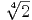

MA3D5 Galois Theory
Solutions to Homework Assignment 3
Answer 1
Write
with αi ∈ ℂ. The splitting field of f is ℚ(α1,…,αn) Since f ∈ ℚ[x], the minimal polynomial of α1 over ℚ divides f and hence has degree ≤ n. Thus [ℚ(α1) : ℚ] ≤ n. Now consider the extension,
Write K = ℚ(α1,…,αi). Then f ∈ K[x] and g = (x-α1)(x-αi) ∈ K[x]. Thus h = f∕g ∈ K[x] and has degree n - i. Moreover, αi+1 is a root of h, and thus its minimal polynomial over K has degree ≤ n - i. It follows that
Now by the Tower Law,
Answer 2
Note that has minimal polynomial x4 - 2 over ℚ. Thus [L : ℚ] = 4.
Moreover, a ℚ-basis for L is 1, , 2,  3.
3.
Let σ ∈ Aut(L∕ℚ). Then σ is determined by σ() ∈ L. This
must be a conjugate of over ℚ and hence one of the roots of
x4 - 2. These roots are , i, -, -i . However, L ⊂ ℝ,
thus σ() = ±. We want to show that for each possible sign,
there is a corresponding automorphism σ ∈ Aut(L∕ℚ). Clearly the
plus sign is possible as it corresponds to the identity automorphism
1 : L → L.
. However, L ⊂ ℝ,
thus σ() = ±. We want to show that for each possible sign,
there is a corresponding automorphism σ ∈ Aut(L∕ℚ). Clearly the
plus sign is possible as it corresponds to the identity automorphism
1 : L → L.
We want to show the existence of ℚ-automorphism σ : L → L such that σ() = -. For this we can use the following result from the lectures: if α, β has the same minimal polynomial over a field K, then there is an isomorphism σ : K(α) → K(β) such that σ(α) = β and σ(a) = a for all a ∈ K. Here we take K = ℚ, α = and β = -. Note that K(α) = K(β) = L, thus we obtain the desired automorphism.
Hence Aut(L∕ℚ) = {1,σ} is cyclic of order 2, where σ() = -.
Finally we want F = LAut(L∕ℚ). Let α ∈ L. We can write α uniquely as
with a, b, c, d ∈ ℚ. Then α ∈ F if and only if σ(α) = α. However

Thus α ∈ F iff b = d = 0. It follows that
Answer 3
By defintion, an extension L∕K is Galois iff LAut(L∕K) = K.
Let L = ℚ( ). We know from Answer 2 that LAut(L∕ℚ) = ℚ() thus
L∕ℚ is not Galois. We will show that L∕F and F = ℚ are Galois where
F = ℚ(). This gives counterexample to the statement in the
question.
). We know from Answer 2 that LAut(L∕ℚ) = ℚ() thus
L∕ℚ is not Galois. We will show that L∕F and F = ℚ are Galois where
F = ℚ(). This gives counterexample to the statement in the
question.
Recall from the lectures that an extension L∕K is Galois if and only if L is the splitting field of a separable polynomial f ∈ K[x]. Now in our situation,
is the splitting field of x2 - 2 ∈ ℚ[x], and x2 - 2 is separable as its roots are distinct. Hence F∕ℚ is Galois. Moreover,
This is the splitting field of x2 - over F, and the polynomial x2 - is separable as its roots are distinct. Hence L∕F is Galois.
Answer 4
Answer 5
The second factor f = xp-1+xp-2++1 is irreducible (from Algebra II). Its roots are ζ,…,ζp-1. Thus

is the splitting field of f. As f is separable (distinct roots), it follows that ℚ(ζ)∕ℚ is Galois.
Note that
The exponents only matter modulo p as ζ has order p. Hence if 1 ≤ c ≤ p- 1 and c ≡ ab (mod p), then σaσb = σc. It follows that we have an isomorphism,
Observe that σ(ζ) = ζ = exp(2πi∕p) = exp(-2πi∕p) = 1∕ζ. Hence
which means that ζ + 1∕ζ ∈ F. Let F′ = ℚ(ζ + 1∕ζ). Thus F′ ⊆ F. We want to show that F′ = F. Note that ζ is a root of
Hence [F′(ζ) : F′] ≤ 2. But
So [ℚ(ζ) : F′] ≤ 2. Consider the tower ℚ(ζ)∕F∕F′. Applying the Tower Law, and the fact that [ℚ(ζ) : F] = 2 we deduce that [F : F′] = 1 and so F = F′. Hence ℚ(ζ)⟨σ⟩ = ℚ(ζ + 1∕ζ).